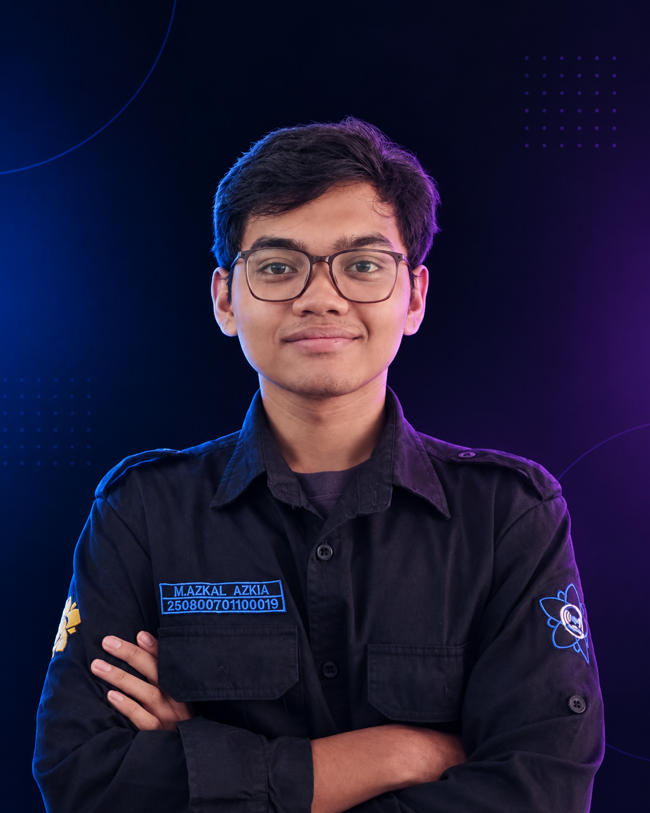

TENTANG SAYA
Tentang M. Azkal Azkia
Mengenal lebih dekat latar belakang, perjalanan akademik, minat, dan hal-hal yang sedang saya kembangkan.

PROFIL MAHASISWA
Teknologi, kreativitas, dan proses belajar
Saya berasal dari Sigli dan sekarang tinggal di Baitussalam. Saya memiliki ketertarikan pada hal-hal yang bersifat teknis, tetapi di saat yang sama saya juga menikmati proses berkesenian. Bagi saya, keduanya dapat saling melengkapi ketika mengerjakan sesuatu yang membutuhkan logika sekaligus kreativitas.
Saat ini saya menempuh pendidikan D3 Manajemen Informatika di Universitas Syiah Kuala, angkatan 2025. Dalam proses belajar, saya mengeksplorasi berbagai bidang mulai dari pemrograman dan pengembangan web hingga 3D modeling dan game development.
ARAH PENGEMBANGAN
Hal yang ingin saya kembangkan
Beberapa hal yang ingin saya capai selama perjalanan belajar dan pengembangan diri.
-
01
Mendapatkan pengalaman melalui magang
Mencari kesempatan untuk menerapkan kemampuan yang saya pelajari dalam lingkungan kerja dan proyek nyata.
-
02
Mengikuti sertifikasi yang relevan
Mengembangkan kemampuan sekaligus memperoleh sertifikasi yang mendukung bidang yang saya tekuni.
-
03
Mengembangkan kemampuan teknologi
Terus mempelajari pemrograman, pengembangan web, 3D modeling, dan game development.
-
04
Menghasilkan karya yang bermanfaat
Saya ingin berkontribusi melalui teknologi yang dapat membantu meningkatkan quality of life sekaligus menghasilkan karya di bidang hiburan.
LET'S CONNECT
Masih dalam proses berkembang.
Perjalanan belajar saya masih panjang, dan website ini menjadi salah satu tempat untuk mendokumentasikan proses, kemampuan, dan karya yang saya kembangkan dari waktu ke waktu.